%run Movies-data-organize-cleaning.ipynb
%run EDA_visualization.ipynb
%run Movies-Supervised_learning.ipynbWe are Raziel Shushan and Rom Basson, second year computer science students at HIT College. Our project is in a data science course taught by Dr. Jonathan Scheller.
In the project we are trying to understand whether it is possible to predict revenue for a film that was screened in the cinema based on data from several sources of information. Calculation of income per film = income in the country of origin + income from countries to which the film was distributed.
Cinema for us is not just a movie and popcorn. It's watching the movie page on IMDB, reading reviews and of course lots of talk before watching the movie itself. Therefore, it was natural to choose this subject especially after the Corona period when cinemas in Israel were shut down and the lack was felt so much.
You can view the source code at GitHab on the following link - https://github.com/RazielShushan/data_science_hit_project.git In this notebook we will use the functions we built in the other notebooks according to the steps in the project, you can view the full code in the notebooks:
When we approached the project, we realized that there is a difficulty in separating within the Box office site (an IMDB site that displays revenue data) between films that were distributed for broadcast on DVD, Netflix, Amazon Prime, etc' and films that featured in cinemas.
Therefore, we used two different sources of information –
We performed the data scraping process with the help of Beautiful soup, the retrieval on the first site was quick because all that was required was to index all the links on the home page that refer to the list of films by year and save the relevant data ( "movie name" and "year of release"). In total We retrieved 6398 movies and the process took several hours. (A small anecdote: when making the scraping on the site apparently the load of requests collapsed the site for a few hours and then the IP address we accessed was blocked, of course there was no difficulty in bypassing this block by connecting to VPN)
The second step, on the other hand, was more complex, because we had to simulate a movie search on the site and verify that we found a movie that matched the relevant details (movie and release year match).
The scraping process took several days due to the number of requests. (We did not execute a parallel run so as not to be blocked)
In total we were able to export data on about 5400 movies, the rest of the movies were not found in the database, we performed a manual search sample and indeed we did not find these movies on the destination site.
We decided to pull out almost all the existing information about the film because we did not yet know what data we would use and where there are correlations between the various data so the table contains about 31 columns that contain a lot of information about the film.
|
|
Column Name |
Description |
|
Column Name |
Description |
|
1 |
movie_name |
The name of the film |
17 |
producer_names |
The names of the producers |
|
2 |
movie_link |
Link the movie page on the Box Office website |
18 |
producer_sum |
Total producers |
|
3 |
year |
Year of release of the film |
19 |
composer_names |
The names of the composers |
|
4 |
description |
Movie description |
20 |
composer_sum |
Total composers |
|
5 |
genres |
The genres |
21 |
cinematographer_names |
The names of the photographers |
|
6 |
running_time |
Movie time |
22 |
cinematographer_sum |
Total photographers |
|
7 |
earliest_release_date |
Date of release of the film |
23 |
editor_names |
Names of editors |
|
8 |
mpaa |
Viewing classification |
24 |
editor_sum |
Total editors |
|
9 |
budget |
Movie budget |
25 |
production_designer_names |
Names of production designers |
|
10 |
preformence |
The performance of the film is divided into each country where the film was screened |
26 |
production_designer_sum |
Total production designers |
|
11 |
num_of_countries |
Total countries in which the film was screened |
27 |
domestic_income |
Income in the country of origin of the film |
|
12 |
cast |
Leading actors in the film |
28 |
domestic_percent |
Percentage of income in the country of origin of the film |
|
13 |
director_names |
The names of the directors |
29 |
international_income |
Income from an international source (relative to the country of origin) |
|
14 |
director_sum |
Total directors |
30 |
international_percent |
The percentage of income from the country of origin of the film from the world income |
|
15 |
writer_names |
The names of the screenwriters |
31
|
worldwide_income
|
Total global income |
|
16 |
writer_sum |
Total screenwriters |
After the scraping process we stored the dataset inside a data folder. We will load the data and look at the top of the list.
df = load_csv("./data/All_movies_table.csv")
df.head()| movie_name | movie_link | year | description | genres | running_time | earliest_release_date | mpaa | budget | preformence | ... | cinematographer_sum | editor_names | editor_sum | production_designer_names | production_designer_sum | domestic_income | domestic_percent | international_income | international_percent | worldwide_income | |
|---|---|---|---|---|---|---|---|---|---|---|---|---|---|---|---|---|---|---|---|---|---|
| 0 | My Life Directed | https://www.boxofficemojo.com/title/tt4029998/... | 2015 | Liv Corfixen documents her husband, filmmaker ... | Documentary | 58.0 | 27/02/2015 | PG-13 | NaN | [['Domestic', 'Feb 27, 2015', '\n \n ... | ... | 1.0 | Cathrine Ambus | 1.0 | NaN | 0.0 | NaN | NaN | NaN | NaN | NaN |
| 1 | Superpower Dogs | https://www.boxofficemojo.com/title/tt5629084/... | 2019 | Discover the life-saving superpowers and extra... | Documentary | 47.0 | 29/08/2019 | G | NaN | [['United Kingdom', 'Oct 23, 2020', '$224', '$... | ... | 1.0 | NaN | 0.0 | NaN | 0.0 | NaN | NaN | 32853.0 | 100% | 32853.0 |
| 2 | A Beautiful Planet | https://www.boxofficemojo.com/title/tt2800050/... | 2016 | An exploration of Earth and beyond as seen fro... | Documentary | 46.0 | 29/04/2016 | NaN | NaN | [['Domestic', 'Apr 29, 2016', '$223,983', '$15... | ... | 1.0 | Toni Myers | 1.0 | NaN | 0.0 | 15650615.0 | 60.80% | 10079505.0 | 39.20% | 25730120.0 |
| 3 | Hubble | https://www.boxofficemojo.com/title/tt1433813/... | 2010 | An IMAX 3D camera chronicles the effort of 7 a... | Documentary|Short | 45.0 | 19/03/2010 | NaN | NaN | [['Domestic', 'Mar 19, 2010', '$413,477', '$52... | ... | 1.0 | Toni Myers | 1.0 | NaN | 0.0 | 52522904.0 | 70.70% | 21726825.0 | 29.30% | 74249729.0 |
| 4 | The Walking Deceased | https://www.boxofficemojo.com/title/tt3743822/... | 2015 | A Walking Dead spinoff set in Los Angeles, Cal... | Drama|Horror|Sci-Fi|Thriller | 44.0 | 15/04/2018 | NaN | NaN | [['Domestic', 'Apr 15, 2018', '$605,764', '$60... | ... | 0.0 | NaN | 0.0 | NaN | 0.0 | 605764.0 | 100% | NaN | NaN | 605764.0 |
5 rows × 31 columns
As we described above there are 31 columns and 6399 lines, some of the lines are indeed empty but later it seems that most of them are full of good data 😊.
df.shape(6399, 31)At this point we use the info() function to get a preliminary understanding on our columns.
It can be seen that most of the columns are full of content, however, there are some columns that suffer from a great shortage such as a budget column containing 1549 rows that are just NULL!, meaning that over 70 percent of the rows are empty of this content. So unfortunately, we will not use this column.
Also, the MPAA column is missing about 40 percent, but, since we have not yet deleted rows of irrelevant rows the percentage may have dropped so at this point we will keep this column.
df.info()<class 'pandas.core.frame.DataFrame'>
RangeIndex: 6399 entries, 0 to 6398
Data columns (total 31 columns):
# Column Non-Null Count Dtype
--- ------ -------------- -----
0 movie_name 6399 non-null object
1 movie_link 5493 non-null object
2 year 6399 non-null int64
3 description 5485 non-null object
4 genres 5493 non-null object
5 running_time 5483 non-null float64
6 earliest_release_date 5476 non-null object
7 mpaa 3960 non-null object
8 budget 1549 non-null object
9 preformence 5484 non-null object
10 num_of_countries 5484 non-null float64
11 cast 5434 non-null object
12 director_names 5433 non-null object
13 director_sum 5434 non-null float64
14 writer_names 5177 non-null object
15 writer_sum 5434 non-null float64
16 producer_names 5358 non-null object
17 producer_sum 5434 non-null float64
18 composer_names 4954 non-null object
19 composer_sum 5434 non-null float64
20 cinematographer_names 5190 non-null object
21 cinematographer_sum 5434 non-null float64
22 editor_names 5326 non-null object
23 editor_sum 5434 non-null float64
24 production_designer_names 4455 non-null object
25 production_designer_sum 5434 non-null float64
26 domestic_income 4738 non-null float64
27 domestic_percent 4702 non-null object
28 international_income 4419 non-null float64
29 international_percent 4401 non-null object
30 worldwide_income 5337 non-null float64
dtypes: float64(12), int64(1), object(18)
memory usage: 1.5+ MB
Because of the above data we will delete the budget column using the auxiliary function
df = delete_col_by_name(df,"budget")We will now delete double rows, in total we found 16 such rows
df = remove_duplicatives(df)
df.shape(6383, 30)We will now delete lines without critical information for further research:
After deleting we were left with 5321 lines.
df = delete_missing_lines(df,["movie_link","worldwide_income"])
df.shape(5321, 30)We will now deal with the Categorical columns, genre and MPAA and will transfer them to numerical columns. For MPAA we will use a helper function to form a categorical column on dataset.
df = add_categorical_column(df,'mpaa')
df[["movie_name","mpaa","mpaa_cat"]]| movie_name | mpaa | mpaa_cat | |
|---|---|---|---|
| 1 | Superpower Dogs | G | 0 |
| 2 | A Beautiful Planet | NaN | -1 |
| 3 | Hubble | NaN | -1 |
| 4 | The Walking Deceased | NaN | -1 |
| 5 | Tornado Alley | NaN | -1 |
| ... | ... | ... | ... |
| 5754 | Youth In Oregon | NaN | -1 |
| 5843 | Mayhem | NaN | -1 |
| 5891 | The Barber | NaN | -1 |
| 6178 | The Hole | NaN | -1 |
| 6301 | Walking On Dead Fish | PG-13 | 4 |
5321 rows × 3 columns
For the genre column it is a little bit complicated because there are many genres and each movie has more than one genre, so we added a column with the value 0 or 1 that verifies if the film belongs to this genre. We will use a helper function to divide the data into columns. The sign for separating the data to colomns is '|'
After the transfer we had another 21 columns.
df = df_division_of_data(df,"genres","|")
df.head()| movie_name | movie_link | year | description | genres | running_time | earliest_release_date | mpaa | preformence | num_of_countries | ... | Romance | Comedy | Mystery | Fantasy | Western | Musical | unknown | Sport | Animation | News | |
|---|---|---|---|---|---|---|---|---|---|---|---|---|---|---|---|---|---|---|---|---|---|
| 1 | Superpower Dogs | https://www.boxofficemojo.com/title/tt5629084/... | 2019 | Discover the life-saving superpowers and extra... | Documentary | 47.0 | 29/08/2019 | G | [['United Kingdom', 'Oct 23, 2020', '$224', '$... | 3.0 | ... | 0 | 0 | 0 | 0 | 0 | 0 | 0 | 0 | 0 | 0 |
| 2 | A Beautiful Planet | https://www.boxofficemojo.com/title/tt2800050/... | 2016 | An exploration of Earth and beyond as seen fro... | Documentary | 46.0 | 29/04/2016 | NaN | [['Domestic', 'Apr 29, 2016', '$223,983', '$15... | 5.0 | ... | 0 | 0 | 0 | 0 | 0 | 0 | 0 | 0 | 0 | 0 |
| 3 | Hubble | https://www.boxofficemojo.com/title/tt1433813/... | 2010 | An IMAX 3D camera chronicles the effort of 7 a... | Documentary|Short | 45.0 | 19/03/2010 | NaN | [['Domestic', 'Mar 19, 2010', '$413,477', '$52... | 7.0 | ... | 0 | 0 | 0 | 0 | 0 | 0 | 0 | 0 | 0 | 0 |
| 4 | The Walking Deceased | https://www.boxofficemojo.com/title/tt3743822/... | 2015 | A Walking Dead spinoff set in Los Angeles, Cal... | Drama|Horror|Sci-Fi|Thriller | 44.0 | 15/04/2018 | NaN | [['Domestic', 'Apr 15, 2018', '$605,764', '$60... | 1.0 | ... | 0 | 0 | 0 | 0 | 0 | 0 | 0 | 0 | 0 | 0 |
| 5 | Tornado Alley | https://www.boxofficemojo.com/title/tt1852955/... | 2011 | A team of storm chasers track a tornado. | Documentary|Short | 43.0 | 29/09/2011 | NaN | [['Australia', 'Sep 29, 2011', '$69,637', '$17... | 1.0 | ... | 0 | 0 | 0 | 0 | 0 | 0 | 0 | 0 | 0 | 0 |
5 rows × 55 columns
We will now go through the significant numeric columns and look for outliers and remove the relevant rows It can be seen that there are anomalies in the running time column and therefore we will delete these lines (about 160 lines)
df.describe(include='all')| movie_name | movie_link | year | description | genres | running_time | earliest_release_date | mpaa | preformence | num_of_countries | ... | Romance | Comedy | Mystery | Fantasy | Western | Musical | unknown | Sport | Animation | News | |
|---|---|---|---|---|---|---|---|---|---|---|---|---|---|---|---|---|---|---|---|---|---|
| count | 5321 | 5321 | 5321.000000 | 5313 | 5321 | 5312.000000 | 5321 | 3860 | 5321 | 5321.000000 | ... | 5321.000000 | 5321.000000 | 5321.000000 | 5321.000000 | 5321.000000 | 5321.000000 | 5321.000000 | 5321.000000 | 5321.000000 | 5321.000000 |
| unique | 5281 | 5276 | NaN | 5147 | 945 | NaN | 1992 | 7 | 5154 | NaN | ... | NaN | NaN | NaN | NaN | NaN | NaN | NaN | NaN | NaN | NaN |
| top | Unstoppable | https://www.boxofficemojo.com/title/tt1790864/... | NaN | Left without men in the dying days of the Amer... | Drama | NaN | 14/09/2018 | R | [['Domestic', 'Oct 18, 2013', '$923,715', '$56... | NaN | ... | NaN | NaN | NaN | NaN | NaN | NaN | NaN | NaN | NaN | NaN |
| freq | 3 | 3 | NaN | 3 | 412 | NaN | 15 | 1970 | 3 | NaN | ... | NaN | NaN | NaN | NaN | NaN | NaN | NaN | NaN | NaN | NaN |
| mean | NaN | NaN | 2014.027814 | NaN | NaN | 104.536521 | NaN | NaN | NaN | 20.409509 | ... | 0.187935 | 0.311971 | 0.100357 | 0.103364 | 0.012780 | 0.016162 | 0.001316 | 0.032701 | 0.050366 | 0.003007 |
| std | NaN | NaN | 3.898136 | NaN | NaN | 18.164725 | NaN | NaN | NaN | 22.127012 | ... | 0.390697 | 0.463342 | 0.300504 | 0.304462 | 0.112333 | 0.126112 | 0.036250 | 0.177869 | 0.218721 | 0.054758 |
| min | NaN | NaN | 2007.000000 | NaN | NaN | 31.000000 | NaN | NaN | NaN | 1.000000 | ... | 0.000000 | 0.000000 | 0.000000 | 0.000000 | 0.000000 | 0.000000 | 0.000000 | 0.000000 | 0.000000 | 0.000000 |
| 25% | NaN | NaN | 2011.000000 | NaN | NaN | 92.000000 | NaN | NaN | NaN | 2.000000 | ... | 0.000000 | 0.000000 | 0.000000 | 0.000000 | 0.000000 | 0.000000 | 0.000000 | 0.000000 | 0.000000 | 0.000000 |
| 50% | NaN | NaN | 2014.000000 | NaN | NaN | 102.000000 | NaN | NaN | NaN | 9.000000 | ... | 0.000000 | 0.000000 | 0.000000 | 0.000000 | 0.000000 | 0.000000 | 0.000000 | 0.000000 | 0.000000 | 0.000000 |
| 75% | NaN | NaN | 2018.000000 | NaN | NaN | 113.000000 | NaN | NaN | NaN | 37.000000 | ... | 0.000000 | 1.000000 | 0.000000 | 0.000000 | 0.000000 | 0.000000 | 0.000000 | 0.000000 | 0.000000 | 0.000000 |
| max | NaN | NaN | 2021.000000 | NaN | NaN | 288.000000 | NaN | NaN | NaN | 88.000000 | ... | 1.000000 | 1.000000 | 1.000000 | 1.000000 | 1.000000 | 1.000000 | 1.000000 | 1.000000 | 1.000000 | 1.000000 |
11 rows × 55 columns
get_outliers(df)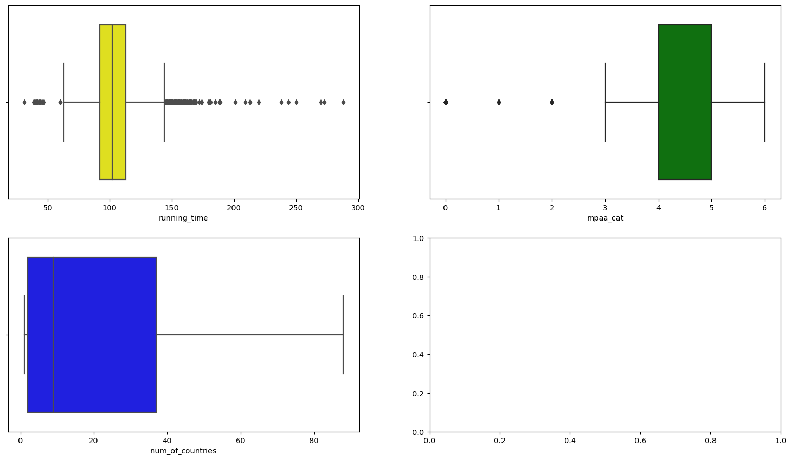
df = remove_outliers_by_col(df,'running_time')
df.shape(5150, 55)get_outliers(df)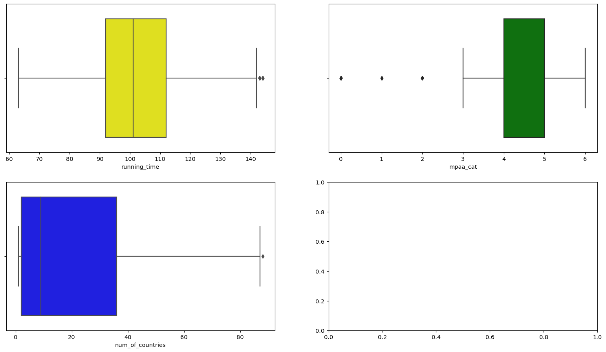
As known nothing better than getting a clear look at the data.
We will begin with looking by years. You can see that 2018 leads with the number of movies, while 2020 and 2021 are a lot lower. We can conclude from this that the reason is the corona epidemic leading to lower film output.
get_vis_division_by_year(df)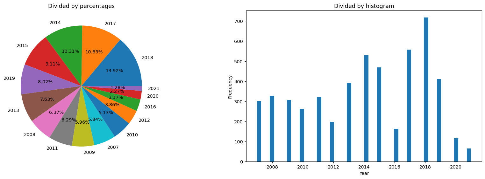
In the genre column you can see that the drama leads and after that comedy.
get_vis_division_by_genres(df)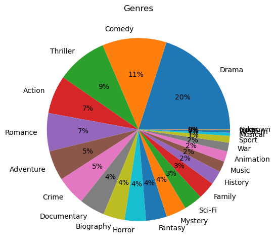
Now we will find columns that influence the world revenue, in other words columns that have a high correlation with the objective.
This is the rating of the correlation between worldwide income and the 9 highest columns (closer to 1)
df.corr()['worldwide_income']year -0.022779
running_time 0.267464
num_of_countries 0.594504
director_sum 0.006995
writer_sum 0.319568
producer_sum -0.030170
composer_sum -0.004200
cinematographer_sum -0.079473
editor_sum 0.082956
production_designer_sum 0.108815
domestic_income 0.942356
international_income 0.981205
worldwide_income 1.000000
mpaa_cat 0.129268
Documentary -0.143765
Short NaN
Drama -0.208594
Horror -0.044863
Sci-Fi 0.272919
Thriller 0.019713
Adventure 0.459514
Biography -0.076869
Family 0.258684
Music -0.031189
Action 0.301650
History -0.064263
War -0.032016
Crime -0.016769
Romance -0.056425
Comedy 0.072205
Mystery -0.005634
Fantasy 0.238758
Western -0.025549
Musical 0.124808
unknown -0.005477
Sport -0.027659
Animation 0.254146
News -0.021953
Name: worldwide_income, dtype: float64Now we will present in Scaater plots the connection between each of the above 9 columns and the target columns(worldwide_income), we can see where the connection is strong compared to a weak connection, as we said before, visualization is a 'game changer' 😊
get_scatter_plot(df)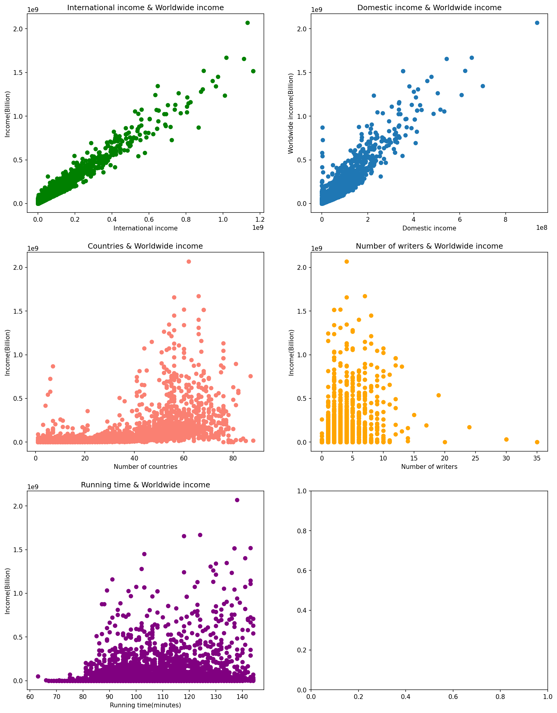
Following what was shown above we examined the relationship between the 9 variables above in order to find correlation with additional columns and then cross them using 3D_Scaater_plot where Z is the target column (worldwide_income)
For running_time I did not find a strong correlation with other data
For sum_of_country we found that there is a correlation with the columns: | column name | corolation rate | | --- | --- | | mpaa | 0.357106 | | running_time | 0.298874 | | writer_sum | 0.307073 |
For writer_sum we found that there is a correlation with the columns: | column name | corolation rate | | --- | --- | | director_sum | 0.342248 | | composer_sum | 0.306485 | | editor_sum | 0.316701 | | production_designer_sum | 0.381229 |
get_two_3D_scaater_plot(df,"num_of_countries","running_time","worldwide_income","num_of_countries","mpaa_cat","worldwide_income")
get_two_3D_scaater_plot(df,"writer_sum","director_sum","worldwide_income","writer_sum","production_designer_sum","worldwide_income")
get_two_3D_scaater_plot(df,"num_of_countries","writer_sum","worldwide_income","writer_sum","editor_sum","worldwide_income")
get_two_3D_scaater_plot(df,"domestic_income","international_income","worldwide_income","writer_sum","composer_sum","worldwide_income")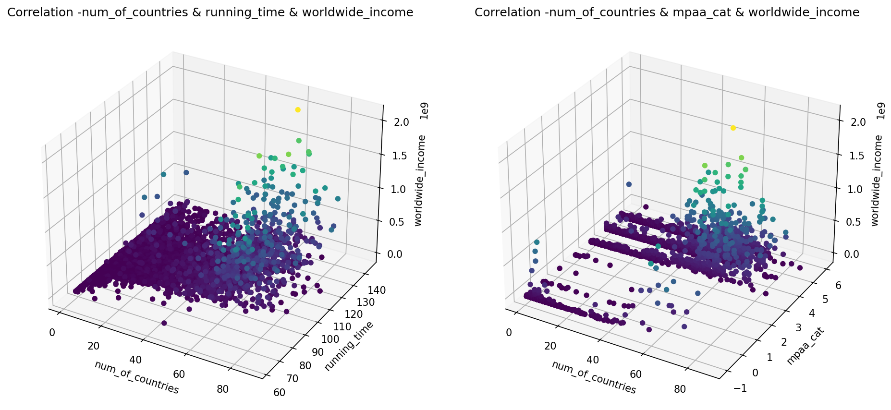
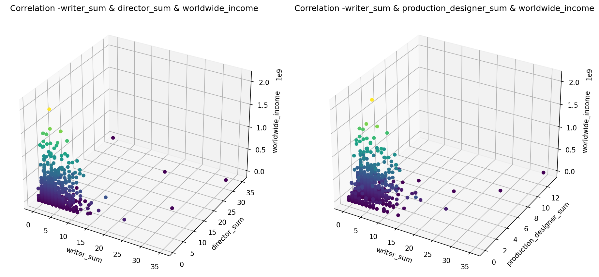
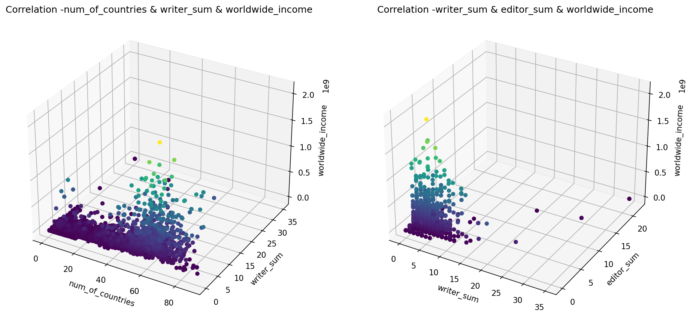
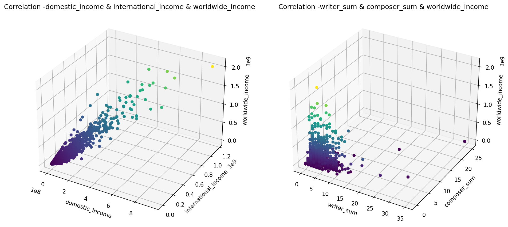
The textual columns can not be analyzed in the same way as the numeric columns, however we will try to find certain words that recur a lot and then check the relationship between them and the income.
In the first two graphs we analyzed the description column, and located the 20 most common words. In the rest of the columns we only show Bar plot, in this project we will not try to predict the result with the help of these columns, nevertheless it is interesting to see the data visually.
get_bar_vis_text_data(df,"description")
get_wordcloud_vis_text_data(df,"description")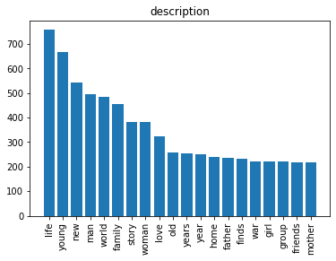
get_bar_vis_text_data(df,"movie_name")
get_bar_vis_text_data(df,"cast")
get_bar_vis_text_data(df,"editor_names")
get_bar_vis_text_data(df,"cinematographer_names")
get_bar_vis_text_data(df,"composer_names")
get_bar_vis_text_data(df,"producer_names")
get_bar_vis_text_data(df,"writer_names")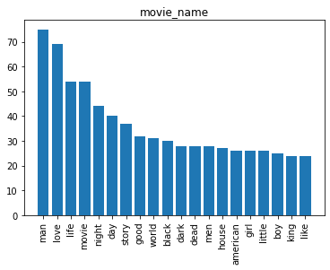
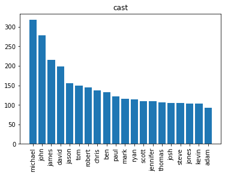
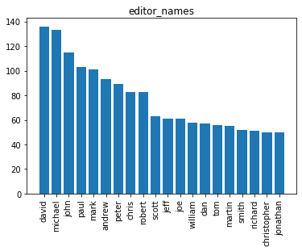
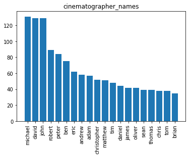
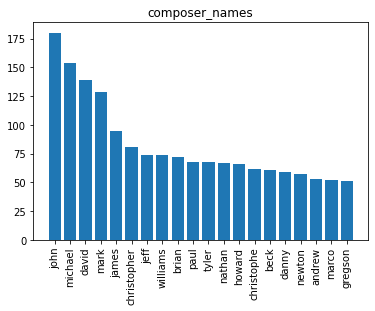
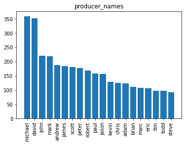
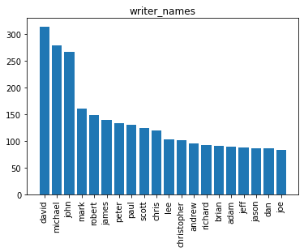
After seeing the top 20 words in the description column, We will try to understand whether there is a connection between the use of this word in the description of the film and the amount of income.
For this purpose, we created a function that for each word adds a column and sums up the number of occurrences per word in the movie description
Then we examined the correlation and it can be seen that there is no close relationship between the common words and income Nevertheless, we will try to use this data in order to see if it has an impact on income prediction.
val,new_list = get_table_with_top_values_coll(df,"description"," ")val[new_list].corr()["worldwide_income"]life -0.058598
young -0.041230
new 0.073826
man -0.044212
world 0.042317
family 0.002284
story -0.057616
woman -0.036601
love -0.028502
old -0.003773
years -0.030748
year -0.022765
year -0.024544
home -0.008350
father -0.013535
finds -0.012813
war 0.002460
girl -0.036250
group -0.005502
friends 0.014404
worldwide_income 1.000000
Name: worldwide_income, dtype: float64We will examine a model of linear regression on different tables in order to find the appropriate model to answer the research question. Since we have done a lot of manipulations on our table we will use a dedicated function that performs everything we did above except deleting the exceptional values and splitting the description column. Next we will look at using these manipulations to optimize our models, but for now we will initialize the data
df = get_cleaning_data()In order to run a model of linear regression one must make sure that there are no NULL values, With the help of the INFO function it can be seen that there are now many Null cels in the table so we will only select the columns we find that there is a connection between them and the object of the study, and of course we will delete cells with missing information
df.isna().sum()movie_name 0
movie_link 0
year 0
description 8
genres 0
running_time 9
earliest_release_date 0
mpaa 1463
budget 3791
preformence 0
num_of_countries 0
cast 55
director_names 56
director_sum 55
writer_names 306
writer_sum 55
producer_names 129
producer_sum 55
composer_names 524
composer_sum 55
cinematographer_names 294
cinematographer_sum 55
editor_names 157
editor_sum 55
production_designer_names 1003
production_designer_sum 55
domestic_income 599
domestic_percent 635
international_income 918
international_percent 936
worldwide_income 0
mpaa_cat 0
Documentary 0
Short 0
Drama 0
Horror 0
Sci-Fi 0
Thriller 0
Adventure 0
Biography 0
Family 0
Music 0
Action 0
History 0
War 0
Crime 0
Romance 0
Comedy 0
Mystery 0
Fantasy 0
Western 0
Musical 0
unknown 0
Sport 0
Animation 0
News 0
dtype: int64We will mark the columns we want to delete as well as the columns that are deleted in a row if missing cells are found First we will run the model without the MPAA column, later we will try to run with it (although this significantly reduces the amount of data) We will then run the get_ml_df() function which deletes the columns and clears missing rows as well as returns a table with numeric data only
cols = ['international_income','international_percent','domestic_income','domestic_percent','mpaa' ,'mpaa_cat']
rows = ['writer_sum','running_time']
df_test_1 = get_ml_df(df,rows,cols)We will make sure that there are no missing cells and all the columns are numeric
df_test_1.info()<class 'pandas.core.frame.DataFrame'>
Int64Index: 5279 entries, 1 to 5482
Data columns (total 35 columns):
# Column Non-Null Count Dtype
--- ------ -------------- -----
0 year 5279 non-null int64
1 running_time 5279 non-null float64
2 num_of_countries 5279 non-null float64
3 director_sum 5279 non-null float64
4 writer_sum 5279 non-null float64
5 producer_sum 5279 non-null float64
6 composer_sum 5279 non-null float64
7 cinematographer_sum 5279 non-null float64
8 editor_sum 5279 non-null float64
9 production_designer_sum 5279 non-null float64
10 worldwide_income 5279 non-null float64
11 Documentary 5279 non-null int64
12 Short 5279 non-null int64
13 Drama 5279 non-null int64
14 Horror 5279 non-null int64
15 Sci-Fi 5279 non-null int64
16 Thriller 5279 non-null int64
17 Adventure 5279 non-null int64
18 Biography 5279 non-null int64
19 Family 5279 non-null int64
20 Music 5279 non-null int64
21 Action 5279 non-null int64
22 History 5279 non-null int64
23 War 5279 non-null int64
24 Crime 5279 non-null int64
25 Romance 5279 non-null int64
26 Comedy 5279 non-null int64
27 Mystery 5279 non-null int64
28 Fantasy 5279 non-null int64
29 Western 5279 non-null int64
30 Musical 5279 non-null int64
31 unknown 5279 non-null int64
32 Sport 5279 non-null int64
33 Animation 5279 non-null int64
34 News 5279 non-null int64
dtypes: float64(10), int64(25)
memory usage: 1.4 MB
We will split the dataset into 2 separate tables
Also we will remove the income column that we want to predict for each dataset
train, test = split_table_to_train_and_test(df_test_1)
X_train, y_train = split_dataset(train,'worldwide_income')
X_test, y_test = split_dataset(test,'worldwide_income')The moment of truth has arrived :) Now we can train our first linear regression model!
trained_mode = train_model(X_train, y_train)We will use the model to examine the dataset we have assigned to the test
pred_vals = predict(trained_mode, X_test)We will evaluate our model using R2 value calculation. 0.4>R2 This is definitely a great result relative to the first model!
y_pred= pd.Series(pred_vals,index=X_test.index)
eval_res = evaluate_performance(y_test, y_pred)
eval_res0.41883197401071204We will now examine whether the MPAA column improves our model
df = get_cleaning_data()
df = delete_missing_lines(df,['mpaa'])
cols = ['international_income','international_percent','domestic_income','domestic_percent']
df_test_2 = get_ml_df(df,rows,cols)Excellent! We improved the result
calculate_lr_R2(df_test_2,'worldwide_income')0.5278908498195151We will now try to add to the model the manipulation we showed on the description column
rows = ['writer_sum','running_time','description','mpaa']
df = get_cleaning_data()
df = delete_col_by_name(df,cols)
df = delete_missing_lines(df,rows)
val,new_list = get_table_with_top_values_coll(df,"description"," ")
val = delete_col_by_name(val,['worldwide_income','year'])
df[val.columns] = valdf_test_3 = get_ml_df(df,rows,None)Unfortunately this did not contribute to improve the model :(
calculate_lr_R2(df_test_3,'worldwide_income')0.4483998131011365There is a lot more to do, but time is limited and we are not short on courses :) We can continue to delve into the data and make more complex visualizations and of course try to import missing information and add to the existing dataset.
When we approached the project based mainly on the film budget, but once we finished pulling out the information we realized that this is an information gap that will be complex to bridge and yet the use of data such as genres, description, film time etc.. proved to be very effective, our R2 score get's more then 0.5! So consequently, it was worth the complexity.
If you have come this far, we would love to hear feedback that will help us learn and draw conclusions for the next project in this fascinating field.